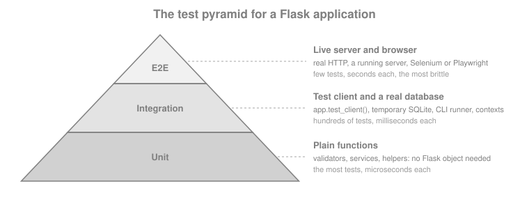

Testing
|
This content was generated with the assistance of AI and should be verified against the official documentation before being relied on in production. |
This page is written against Flask 3.1.3 (released 2026-02-18), Werkzeug 3.1.9, Click 8.5.0 and pytest 9.1, checked on 2026-10-07, and every code block was executed on Python 3.13. Flask 3.2 is not released yet; the changes it lists that touch testing are described as upcoming. Flask ships no test framework of its own. What it ships is a test client (a Werkzeug client that calls the WSGI application in-process, with no server and no sockets) and a CLI runner (a Click runner that knows the application). Everything else, fixtures, parametrization, mocking and coverage, comes from pytest and its ecosystem. This page builds a small Bookshelf API and tests it the way the official documentation and tutorial recommend, then shows where the books that cover Flask unit testing are outdated.
What to Test and How
Three small ideas organise most of what follows, and the page uses them as vocabulary.
-
FIRST describes a good unit test: *F*ast (milliseconds, so the whole suite runs on every save), *I*ndependent (no test needs another to have run first, and tests pass in any order), *R*epeatable (same result on a laptop, in CI and at 3 a.m., so no live network, no wall clock, no shared database), *S*elf-validating (the test passes or fails by itself, with no human reading output) and *T*imely (written with or just before the code it covers).
-
Arrange, Act, Assert (3A) is the shape of one test: arrange the state it needs (a user, a book), act once (one request, one function call), assert on the outcome. A test with two acts is two tests.
-
The test pyramid says how many tests of each kind to write. Many fast unit tests of plain functions, fewer integration tests that go through the test client and a real database, and very few end-to-end tests against a running server and a browser. Higher tiers cost more to write, run and keep stable, so they cover only what the lower tiers cannot.

The Flask documentation adds a rule of thumb that keeps the pyramid honest: test the code you wrote, not the code of the libraries you use, and extract complex behaviour into separate functions so it can be tested without a request. Most of the page lives in the middle tier, because that is where Flask-specific behaviour (routing, sessions, error handlers, extensions) lives, but the Bookshelf code deliberately keeps a pure validation function so the base tier has something to test.
The Application Under Test
The examples need something to test. Bookshelf here is a deliberately small catalogue API built with the application
factory from Application Factory & Project Layout. It
uses the standard library sqlite3 module so that the page has no database dependency, a session cookie for login, and
one call to an external ISBN service, so that mocking has something real to replace. Each file is shown once; later
sections only import from it. The page’s code blocks are extracted into a project folder and run with pytest exactly as
shown.
import sqlite3
from flask import current_app, g
SCHEMA = """
CREATE TABLE IF NOT EXISTS user (
id INTEGER PRIMARY KEY AUTOINCREMENT,
username TEXT UNIQUE NOT NULL,
password_hash TEXT NOT NULL
);
CREATE TABLE IF NOT EXISTS book (
id INTEGER PRIMARY KEY AUTOINCREMENT,
isbn TEXT UNIQUE NOT NULL,
title TEXT NOT NULL,
author TEXT NOT NULL
);
"""
def get_db():
if "db" not in g:
g.db = sqlite3.connect(current_app.config["DATABASE"])
g.db.row_factory = sqlite3.Row
return g.db
def close_db(error=None):
db = g.pop("db", None)
if db is not None:
db.close()
def init_db():
get_db().executescript(SCHEMA)
def init_app(app):
app.teardown_appcontext(close_db)
@app.cli.command("init-db")
def init_db_command():
"""Create the tables."""
init_db()
print("Initialised the database.")from flask import request
def json_body():
"""The JSON object sent by the client, or an empty dict for anything else."""
data = request.get_json(silent=True)
return data if isinstance(data, dict) else {}
def validate_book(payload):
"""Return a dict of field -> problem; empty means the payload is valid."""
if not isinstance(payload, dict):
return {"body": "a JSON object is required"}
errors = {}
for field in ("isbn", "title", "author"):
value = payload.get(field)
if not isinstance(value, str) or not value.strip():
errors[field] = "required"
isbn = payload.get("isbn")
if "isbn" not in errors and not isbn.replace("-", "").isdigit():
errors["isbn"] = "digits and hyphens only"
return errorsSource: Flask: API, Request.get_json
import functools
import sqlite3
from flask import Blueprint, g, redirect, session, url_for
from werkzeug.security import check_password_hash, generate_password_hash
from .db import get_db
from .validation import json_body
bp = Blueprint("auth", __name__, url_prefix="/auth")
MIN_PASSWORD_LENGTH = 12
def login_required(view):
@functools.wraps(view)
def wrapped(*args, **kwargs):
if g.user is None:
return {"error": "authentication required"}, 401
return view(*args, **kwargs)
return wrapped
@bp.before_app_request
def load_logged_in_user():
user_id = session.get("user_id")
g.user = None
if user_id is not None:
g.user = get_db().execute(
"SELECT id, username FROM user WHERE id = ?", (user_id,)
).fetchone()
@bp.post("/register")
def register():
data = json_body()
username = str(data.get("username", "")).strip()
password = str(data.get("password", ""))
if not username:
return {"errors": {"username": "required"}}, 400
if len(password) < MIN_PASSWORD_LENGTH:
return {"errors": {"password": f"at least {MIN_PASSWORD_LENGTH} characters"}}, 400
db = get_db()
try:
db.execute(
"INSERT INTO user (username, password_hash) VALUES (?, ?)",
(username, generate_password_hash(password)),
)
db.commit()
except sqlite3.IntegrityError:
return {"errors": {"username": "already registered"}}, 409
return {"username": username}, 201
@bp.post("/login")
def login():
data = json_body()
user = get_db().execute(
"SELECT id, username, password_hash FROM user WHERE username = ?",
(str(data.get("username", "")),),
).fetchone()
if user is None or not check_password_hash(user["password_hash"], str(data.get("password", ""))):
return {"error": "invalid credentials"}, 401
session.clear()
session["user_id"] = user["id"]
return {"username": user["username"]}
@bp.post("/logout")
def logout():
session.clear()
return redirect(url_for("index"))
@bp.get("/me")
@login_required
def me():
return {"username": g.user["username"]}import json
import urllib.error
import urllib.parse
import urllib.request
from flask import current_app
def lookup_title(isbn):
"""Ask the external ISBN service for a title; None when it does not know the ISBN."""
url = f"{current_app.config['ISBN_SERVICE_URL']}/isbn/{urllib.parse.quote(isbn, safe='')}"
try:
with urllib.request.urlopen(url, timeout=3) as response:
return json.load(response)["title"]
except urllib.error.HTTPError as error:
if error.code == 404:
return None
raiseSource: Python: urllib.request
import sqlite3
from flask import Blueprint, abort, request, url_for
from .auth import login_required
from .db import get_db
from .isbn import lookup_title
from .validation import json_body, validate_book
bp = Blueprint("books", __name__, url_prefix="/api")
@bp.get("/books")
def list_books():
query = request.args.get("q", "")
rows = get_db().execute(
"SELECT id, isbn, title, author FROM book WHERE title LIKE ? ORDER BY id",
(f"%{query}%",),
).fetchall()
return {"books": [dict(row) for row in rows]}
@bp.post("/books")
@login_required
def create_book():
payload = json_body()
errors = validate_book(payload)
if errors:
return {"errors": errors}, 400
db = get_db()
try:
cursor = db.execute(
"INSERT INTO book (isbn, title, author) VALUES (?, ?, ?)",
(payload["isbn"], payload["title"], payload["author"]),
)
db.commit()
except sqlite3.IntegrityError:
return {"errors": {"isbn": "already in the catalogue"}}, 409
book = {"id": cursor.lastrowid, **{key: payload[key] for key in ("isbn", "title", "author")}}
return book, 201, {"Location": url_for("books.get_book", book_id=book["id"])}
@bp.get("/books/<int:book_id>")
def get_book(book_id):
row = get_db().execute(
"SELECT id, isbn, title, author FROM book WHERE id = ?", (book_id,)
).fetchone()
if row is None:
abort(404)
return dict(row)
@bp.delete("/books/<int:book_id>")
@login_required
def delete_book(book_id):
db = get_db()
cursor = db.execute("DELETE FROM book WHERE id = ?", (book_id,))
db.commit()
if cursor.rowcount == 0:
abort(404)
return "", 204
@bp.get("/isbn/<isbn>")
def isbn_title(isbn):
try:
title = lookup_title(isbn)
except OSError:
abort(502)
if title is None:
abort(404)
return {"isbn": isbn, "title": title}import os
from flask import Flask, redirect, url_for
from werkzeug.exceptions import HTTPException
from . import auth, books, db
def create_app(test_config=None, instance_path=None):
app = Flask(__name__, instance_path=instance_path, instance_relative_config=True)
app.config.from_mapping(ISBN_SERVICE_URL="https://isbn.invalid")
app.config["DATABASE"] = os.path.join(app.instance_path, "bookshelf.sqlite")
app.config.from_prefixed_env("BOOKSHELF") # BOOKSHELF_SECRET_KEY -> SECRET_KEY
if test_config is not None:
app.config.update(test_config)
os.makedirs(app.instance_path, exist_ok=True)
db.init_app(app)
app.register_blueprint(auth.bp)
app.register_blueprint(books.bp)
@app.get("/")
def index():
return redirect(url_for("books.list_books"))
@app.errorhandler(HTTPException)
def http_error(error):
return {"error": error.name}, error.code
return appSource: Flask: Application Factories
Two details matter for testing. The factory accepts a test_config mapping that is applied after every other source,
so a test can override anything; and the secret key is not in the code, it comes from BOOKSHELF_SECRET_KEY in the
environment (via from_prefixed_env) or from test_config. Tests must not reuse a production key and must not contain
a literal one; the fixtures below generate a fresh random key per test with secrets.token_hex().
pytest Layout and Fixtures
pytest collects files named test_*.py (or *_test.py) under the configured test paths, and inside them functions
whose names start with test_ and classes whose names start with Test. The convention, used by the official tutorial,
is a tests/ folder next to the package, not inside it, so the tests are never shipped with the application:
bookshelf-project/
|-- bookshelf/ the package shown above
|-- tests/
| |-- conftest.py fixtures shared by every test module
| |-- test_books.py
| |-- test_auth.py
| `-- ...
`-- pyproject.toml pytest and coverage configuration[tool.pytest.ini_options]
testpaths = ["tests"]
pythonpath = ["."] # flat layout; with an installed package (pip install -e .) this is not needed
[tool.coverage.run]
branch = true
source = ["bookshelf"]
[tool.coverage.report]
show_missing = trueSource: pytest: Configuration
conftest.py holds fixtures: functions that build the objects a test needs, discovered by name and injected into test
functions that list them as parameters. Code after the yield is the teardown. The three fixtures every Flask suite
starts from are the application, the test client and the CLI runner, in the shape the official documentation gives:
import secrets
import pytest
from bookshelf import create_app
from bookshelf.db import init_db
@pytest.fixture()
def app(tmp_path):
app = create_app(
{
"TESTING": True,
"SECRET_KEY": secrets.token_hex(),
"DATABASE": str(tmp_path / "test.sqlite"),
},
instance_path=str(tmp_path),
)
with app.app_context():
init_db()
yield app
# teardown goes here; tmp_path is removed by pytest later
@pytest.fixture()
def client(app):
return app.test_client()
@pytest.fixture()
def runner(app):
return app.test_cli_runner()Each of these decisions answers a pitfall:
-
TESTING=True. It tells Flask the application is under test. The practical effect is that exceptions raised by a view are propagated to the test instead of being turned into a generic 500 response, so a bug appears as a traceback at the line that raised it. Extensions also read the flag. It is the same as settingapp.testing = True. -
A fresh application per test. The factory exists for this reason: two tests never share configuration, extensions or database state. A module-level
app = Flask(__name__)imported by every test leaks state between them. -
A temporary database file.
tmp_pathis a per-test folder created by pytest. SQLite’s:memory:database does not work with the plainsqlite3module here because every request opens a new connection and would see an empty database; a file does. (Flask-SQLAlchemy configures a static pool forsqlite://, which is why its tests use memory, see Flask-SQLAlchemy.) The official tutorial usestempfile.mkstemp()for the same purpose. -
A random secret key per test. A hard-coded key in a test file is a hard-coded secret in the repository, and scanners report it.
secrets.token_hex()costs nothing.
import pytest
def test_exceptions_propagate_when_testing(app, client):
@app.get("/boom")
def boom():
raise RuntimeError("bug in a view")
with pytest.raises(RuntimeError, match="bug in a view"):
client.get("/boom")
# What production does: the exception becomes a 500 handled by the error handler
app.config["PROPAGATE_EXCEPTIONS"] = False
response = client.get("/boom")
assert response.status_code == 500
assert response.json == {"error": "Internal Server Error"}PROPAGATE_EXCEPTIONS defaults to None, in which case Flask propagates when TESTING or DEBUG is on. Testing the
production behaviour (your 500 handler, as above) means switching it off for that one test. Keep in mind that the
application then logs the traceback with log_exception; pytest captures it, and it is shown only if the test fails.
The fixtures depend on each other through their parameters, which is how pytest builds the object graph for each test:
Run the suite from the project root with pytest; -x stops at the first failure, -k expression selects tests by
name, -q shortens the output and pytest tests/test_books.py::test_create_book runs one test.
The Test Client
app.test_client() returns a FlaskClient, an extension of Werkzeug’s Client. It builds a WSGI environment from the
arguments, calls the application, and wraps the answer in a TestResponse. There is no server, no socket and no
threading, which is why the tests are fast and why they can see inside the application (the session, g, the database).
It has one method per HTTP verb (get, post, put, patch, delete, head, options) and a generic open. The
arguments that matter, all passed through Werkzeug’s EnvironBuilder, are in the table.
| Argument | What it does |
|---|---|
|
A dict (or a string) that becomes the query string: |
|
A dict of request headers, for example |
|
Serialises the object with the application’s JSON provider and sets |
|
A dict becomes form data ( |
|
Overrides the |
|
|
|
Build the request URL; defaults come from |
|
Extra WSGI environment entries; |
|
Convert the application’s response iterator to a list and call |
import io
from flask import Flask, request
app = Flask(__name__)
@app.post("/echo")
def echo():
return {
"args": request.args.to_dict(),
"form": request.form.to_dict(),
"json": request.get_json(silent=True),
"files": {name: f.read().decode() for name, f in request.files.items()},
"client": request.headers.get("X-Client"),
"mimetype": request.mimetype,
}
client = app.test_client()
# Query string, header and a multipart form with a file upload
response = client.post(
"/echo",
query_string={"page": 2},
headers={"X-Client": "tests"},
data={"title": "Dune", "cover": (io.BytesIO(b"cover-bytes"), "cover.png")},
)
assert response.status_code == 200
assert response.json["args"] == {"page": "2"}
assert response.json["form"] == {"title": "Dune"}
assert response.json["files"] == {"cover": "cover-bytes"}
assert response.json["client"] == "tests"
assert response.json["mimetype"] == "multipart/form-data"
# A JSON body: Content-Type is set for you
response = client.post("/echo", json={"tags": ["sci-fi", "classic"]})
assert response.json["json"] == {"tags": ["sci-fi", "classic"]}
assert response.json["mimetype"] == "application/json"
# A raw body needs an explicit content type
response = client.post("/echo", data=b"plain text", content_type="text/plain")
assert response.json["json"] is None and response.json["mimetype"] == "text/plain"A file value in data can be a binary file object, or a (file, filename, content_type) tuple to set the detected
filename and content type; file objects are closed after the request, so there is no with open(...) ceremony. Larger
fixtures live in a tests/resources folder located with pathlib.Path(__file__).parent.
Reading the response
TestResponse is a normal Flask response plus a few test conveniences:
| Attribute | Use |
|---|---|
|
The integer code and the full line ( |
|
The body as bytes. Compare bytes to bytes. |
|
The body decoded to |
|
The parsed body. A property, not a method. It is |
|
Headers and their parsed forms. |
|
Tuple of the redirect responses that led here, oldest first; each has a |
|
The request that produced this response, with |
The most common mistakes come from the requests library: response.json() (a call on the property’s result, which
raises TypeError for a dict) and response.content (the attribute is data). requests is for talking to real servers.
Using it against a live server and calling the result a unit test mixes two tiers of the pyramid; the test client does the
job in-process.
Redirects
def test_root_redirects_to_the_catalogue(client):
response = client.get("/")
assert response.status_code in (302, 303) # Flask 3.2 is expected to default to 303
assert response.headers["Location"] == "/api/books"
followed = client.get("/", follow_redirects=True)
assert followed.status_code == 200
assert followed.request.path == "/api/books"
assert len(followed.history) == 1
assert followed.history[0].status_code in (302, 303)Without follow_redirects the test sees the redirect itself, which is what you want when the redirect is the behaviour
under test (a login view that redirects to next). With it, response.request.path is the final URL. The in (302, 303)
check is deliberate: redirect() answers 302 in Flask 3.1 and the unreleased 3.2 changelog lists 303 as the new default,
and a test of the redirect target should not break on that.
Cookies
The client keeps a cookie jar and sends the matching cookies on later requests, like a browser, so a login persists across
requests of one client. Since Werkzeug 2.3 the jar is managed with three methods, get_cookie, set_cookie and delete_cookie; the old cookie_jar attribute was deprecated then and does not exist in Werkzeug 3.
from flask import Flask, request
app = Flask(__name__)
@app.get("/whoami")
def whoami():
return {"theme": request.cookies.get("theme", "light")}
client = app.test_client()
assert client.get("/whoami").json == {"theme": "light"}
client.set_cookie("theme", "dark") # domain defaults to localhost
assert client.get("/whoami").json == {"theme": "dark"}
cookie = client.get_cookie("theme")
assert cookie is not None and cookie.value == "dark"
client.delete_cookie("theme")
assert client.get_cookie("theme") is None
assert client.get("/whoami").json == {"theme": "light"}
# A client without a cookie jar: every request starts clean
stateless = app.test_client(use_cookies=False)
try:
stateless.set_cookie("theme", "dark")
except TypeError as error:
assert "Cookies are disabled" in str(error)set_cookie(key, value, *, domain="localhost", origin_only=True, path="/", ...) skips a request just to plant a cookie. The
attributes of the cookie that get_cookie returns (value, http_only, secure, same_site, expires, max_age…)
let a test assert how the application sets cookies, which is how the Bookshelf suite checks the session cookie below.
Sessions: Reading and Presetting
Flask’s session is a signed cookie, so two things are interesting in a test: reading what a request put in it, and
planting a value before a request without going through the login view. Both need the secret key, which the app fixture
sets. Reading uses the client as a context manager: the application and request context stay active after the request,
so session and g can be inspected until the with block ends. Planting uses session_transaction(), which opens the
session, lets the test modify it and saves it into the client’s cookie jar when the block exits. First the helper that
logs in, in the style of the AuthActions class of the official tutorial:
import secrets
class AuthActions:
"""Drive the auth views of the Bookshelf API from tests."""
def __init__(self, client, credentials):
self._client = client
self.credentials = credentials
def register(self):
return self._client.post("/auth/register", json=self.credentials)
def login(self):
return self._client.post("/auth/login", json=self.credentials)
def logout(self):
return self._client.post("/auth/logout")
@pytest.fixture()
def credentials():
# Generated per test: nothing secret-looking lives in the repository
return {"username": "ana", "password": secrets.token_urlsafe(16)}
@pytest.fixture()
def auth(client, credentials):
return AuthActions(client, credentials)
@pytest.fixture()
def logged_in(auth):
"""A client that already has a registered, logged-in user."""
assert auth.register().status_code == 201
assert auth.login().status_code == 200
return authBecause credentials and auth are fixtures, a test can change the user (credentials["username"] = "ben") before the
first call, and each test gets a different password. The auth helper is shared by every module through conftest.py.
from flask import g, session
def test_register_and_login(client, auth):
assert auth.register().status_code == 201
assert client.get("/auth/me").status_code == 401 # registered, not logged in
response = auth.login()
assert response.status_code == 200
assert response.json == {"username": "ana"}
# Reading the session after the request needs the client as a context manager
with client:
client.get("/auth/me")
assert session["user_id"] == 1
assert g.user["username"] == "ana"
# Outside the block the contexts are gone again
assert client.get("/auth/me").json == {"username": "ana"}
def test_logout_clears_the_session(client, logged_in):
with client:
response = logged_in.logout()
assert response.status_code in (302, 303)
assert "user_id" not in session
def test_preset_session_without_the_login_view(client, auth):
auth.register()
with client.session_transaction() as sess:
sess["user_id"] = 1 # as if the user had logged in
assert client.get("/auth/me").json == {"username": "ana"}
def test_session_cookie_flags(client, logged_in):
cookie = client.get_cookie("session")
assert cookie is not None
assert cookie.http_only is TrueThe context kept alive by with client: is dropped when the next request is made inside the block, and the client cannot
be nested (with client: inside with client: raises RuntimeError). session_transaction() raises RuntimeError ("Session backend did not open a session") when
the application has no secret key, which is the usual reason a test cannot build a session. See
Sessions, Cookies & Flashing for what the session is and how it is signed.
Testing Without a Request: Contexts
Code that reads current_app, g, request or session raises RuntimeError: Working outside of application context
when called from a bare test function. Rather than routing a request through a view just to reach it, push a context
yourself.
import sqlite3
import pytest
from flask import current_app, g
from bookshelf.db import get_db
def test_get_db_returns_one_connection_per_context(app):
with app.app_context():
db = get_db()
assert db is get_db()
assert current_app.config["TESTING"] is True
with pytest.raises(sqlite3.ProgrammingError): # closed by teardown_appcontext
db.execute("SELECT 1")
def test_using_a_proxy_outside_a_context_fails():
with pytest.raises(RuntimeError, match="application context"):
get_db()
def test_request_context_does_not_run_before_request(app):
with app.test_request_context("/api/books?q=dune"):
# Dispatching has not happened: the before_app_request hook has not run
assert not hasattr(g, "user")
app.preprocess_request() # run before_request functions by hand
assert g.user is Noneapp.app_context() is the right tool for database helpers, CLI-style code and anything that needs current_app.
app.test_request_context(path, method=..., data=..., headers=...) takes the same arguments as the client’s request methods
and is for functions that read request (a form validator, a helper that parses the Accept-Language header). It does
not run Flask’s dispatching: before_request functions, url_value_preprocessor`s and error handlers are not called, so
call `app.preprocess_request() yourself if the code needs them, or, usually better, make a full request. If a test needs
data to exist in the database first, write it inside with app.app_context(): and commit before making the request. The
mechanics of the contexts are in Application and Request Lifecycle.
Testing CLI Commands
app.test_cli_runner() returns a FlaskCliRunner, a Click CliRunner that already knows the application. invoke() runs
a command the way the flask command would, in an isolated environment, and captures the output in a Result with
output, exit_code and exception. Called with no cli argument it targets the application’s own command group, so the
arguments are the command name and its options, without flask.
import click
def test_init_db_command(app, runner):
result = runner.invoke(args=["init-db"])
assert result.exit_code == 0
assert "Initialised" in result.output
def test_custom_command_with_options(app, runner):
@app.cli.command("greet")
@click.argument("name")
@click.option("--shout", is_flag=True)
def greet(name, shout):
text = f"hello {name}"
click.echo(text.upper() if shout else text)
assert runner.invoke(args=["greet", "ana"]).output == "hello ana\n"
assert runner.invoke(args=["greet", "ana", "--shout"]).output == "HELLO ANA\n"
def test_unknown_command_fails(runner):
result = runner.invoke(args=["no-such-command"])
assert result.exit_code == 2
assert "No such command" in result.outputSince Click 8.2 result.output is the interleaved standard output and error as a user would see them, and stdout and
stderr give the streams separately; the old mix_stderr parameter of CliRunner was removed. Commands registered with
@app.cli.command() run inside an application context automatically, so the @with_appcontext decorator of older recipes
is not needed on them (Flask 2.2). A command that reads input is tested with runner.invoke(args=[...], input="text\n").
The commands themselves are covered in CLI & Shell.
Testing a JSON API
The CRUD tests of the catalogue show what a typical API test looks like: arrange through the logged_in fixture, act with
one request, assert on status, headers and body.
import pytest
BOOK = {"isbn": "978-0441172719", "title": "Dune", "author": "Frank Herbert"}
def test_catalogue_starts_empty(client):
response = client.get("/api/books")
assert response.status_code == 200
assert response.json == {"books": []}
def test_create_then_read_a_book(client, logged_in):
created = client.post("/api/books", json=BOOK)
assert created.status_code == 201
book_id = created.json["id"]
assert created.headers["Location"] == f"/api/books/{book_id}"
fetched = client.get(created.headers["Location"])
assert fetched.status_code == 200
assert fetched.json == {"id": book_id, **BOOK}
assert client.get("/api/books").json["books"] == [fetched.json]
def test_search_by_title(client, logged_in):
client.post("/api/books", json=BOOK)
client.post("/api/books", json={**BOOK, "isbn": "9780553293357", "title": "Foundation"})
titles = [b["title"] for b in client.get("/api/books", query_string={"q": "dun"}).json["books"]]
assert titles == ["Dune"]
def test_duplicate_isbn_is_a_conflict(client, logged_in):
client.post("/api/books", json=BOOK)
response = client.post("/api/books", json=BOOK)
assert response.status_code == 409
assert response.json == {"errors": {"isbn": "already in the catalogue"}}
def test_delete_a_book(client, logged_in):
book_id = client.post("/api/books", json=BOOK).json["id"]
assert client.delete(f"/api/books/{book_id}").status_code == 204
assert client.get(f"/api/books/{book_id}").status_code == 404
assert client.delete(f"/api/books/{book_id}").status_code == 404
def test_missing_book_uses_the_json_error_handler(client):
response = client.get("/api/books/999")
assert response.status_code == 404
assert response.json == {"error": "Not Found"}
@pytest.mark.parametrize("method", ["post", "delete"])
def test_writes_need_authentication(client, method):
path = "/api/books" if method == "post" else "/api/books/1"
response = getattr(client, method)(path, json=BOOK)
assert response.status_code == 401
assert response.json == {"error": "authentication required"}The tests assert on the API contract: status, Location, body shape. They do not look inside the database. When a test
does need to see storage (to prove a row was written or removed) it opens an application context and queries, as the
security tests below do.
Checking the shape of a response
Asserting a whole body with == is exact but brittle once bodies grow. A JSON Schema states the shape once, and the
jsonschema package validates a response against it (install it with pip install jsonschema).
import jsonschema
BOOK_SCHEMA = {
"type": "object",
"required": ["id", "isbn", "title", "author"],
"properties": {
"id": {"type": "integer"},
"isbn": {"type": "string", "pattern": "^[0-9-]+$"},
"title": {"type": "string", "minLength": 1},
"author": {"type": "string", "minLength": 1},
},
"additionalProperties": False,
}
LIST_SCHEMA = {
"type": "object",
"required": ["books"],
"properties": {"books": {"type": "array", "items": BOOK_SCHEMA}},
}
def test_responses_match_their_schemas(client, logged_in):
client.post("/api/books", json={"isbn": "9780553293357", "title": "Foundation", "author": "Isaac Asimov"})
jsonschema.validate(client.get("/api/books").json, LIST_SCHEMA)
jsonschema.validate(client.get("/api/books/1").json, BOOK_SCHEMA)Source: jsonschema: Schema Validation
Hand-written schemas drift from the code. When the API publishes an OpenAPI document (see OpenAPI & API Documentation), the better option is to generate the checks from that document: contract testing with Schemathesis and property-based testing with Hypothesis are the subject of the API Contract & Property-based Testing page of this section, and are not repeated here.
Parametrized Tests
@pytest.mark.parametrize runs one test body with several inputs, which is how the validation rules are covered without
copy and paste. Give hard-to-read cases an id with pytest.param, so a failure names the case.
import pytest
from bookshelf.validation import validate_book
GOOD = {"isbn": "978-0441172719", "title": "Dune", "author": "Frank Herbert"}
def test_a_valid_book_has_no_errors():
assert validate_book(GOOD) == {}
@pytest.mark.parametrize(
("change", "field", "problem"),
[
pytest.param({"title": ""}, "title", "required", id="empty-title"),
pytest.param({"author": " "}, "author", "required", id="blank-author"),
pytest.param({"isbn": None}, "isbn", "required", id="missing-isbn"),
pytest.param({"isbn": "12-ab"}, "isbn", "digits and hyphens only", id="letters-in-isbn"),
pytest.param({"title": 42}, "title", "required", id="title-not-a-string"),
],
)
def test_invalid_fields_are_reported(change, field, problem):
assert validate_book({**GOOD, **change})[field] == problem
@pytest.mark.parametrize("body", [[], "text", 5, None])
def test_the_body_must_be_an_object(body):
assert validate_book(body) == {"body": "a JSON object is required"}
@pytest.mark.parametrize("body", ["[1, 2]", '"text"', "not json"])
def test_the_endpoint_rejects_bodies_that_are_not_objects(client, logged_in, body):
response = client.post("/api/books", data=body, content_type="application/json")
assert response.status_code == 400The first tests in this module call validate_book with no Flask object at all: they are the base of the pyramid, and
run in microseconds. The last test goes through the test client to prove that the view uses the validator and turns a
bad body into a 400 instead of a crash. Parametrize also applies to fixtures (@pytest.fixture(params=[...])), which is
useful to run the same suite against two configurations.
Mocking and Fakes
A test must not depend on a service it does not control. Three tools replace the real thing, in increasing order of fidelity, and the choice is a trade-off between speed and how much of the real integration the test still exercises.
monkeypatch
pytest’s monkeypatch fixture sets attributes, dictionary items and environment variables for the duration of one test
and undoes them afterwards, so a failing test cannot leak its patch into the next. The rule that trips everybody: patch
the name where it is looked up, not where it is defined. bookshelf/books.py does from .isbn import lookup_title, so the
view holds its own reference and the test patches bookshelf.books.lookup_title; patching bookshelf.isbn.lookup_title
would change nothing for the view.
import json
import secrets
import threading
from http.server import BaseHTTPRequestHandler, ThreadingHTTPServer
import pytest
from bookshelf import books as books_module
def test_the_view_returns_the_title_found_by_the_service(client, monkeypatch):
monkeypatch.setattr("bookshelf.books.lookup_title", lambda isbn: "Dune")
response = client.get("/api/isbn/9780441172719")
assert response.json == {"isbn": "9780441172719", "title": "Dune"}
def test_an_unknown_isbn_is_a_404(client, monkeypatch):
monkeypatch.setattr("bookshelf.books.lookup_title", lambda isbn: None)
assert client.get("/api/isbn/0000000000").status_code == 404
def test_environment_variables_are_patched_per_test(monkeypatch, tmp_path):
from bookshelf import create_app
key = secrets.token_hex()
monkeypatch.setenv("BOOKSHELF_SECRET_KEY", key)
app = create_app(instance_path=str(tmp_path))
assert app.config["SECRET_KEY"] == keyunittest.mock and pytest-mock
unittest.mock.patch from the standard library does the same job and adds call tracking: it replaces the target with a
MagicMock that records how it was called. The mocker fixture of the pytest-mock plugin (pip install pytest-mock) has
the same API as patch but is undone automatically at the end of the test, with no with or decorator, and it adds
mocker.spy (record calls but keep the real behaviour) and mocker.stub. Passing autospec=True makes the mock reject calls
that do not match the real signature, which catches tests that keep passing after the function they mock changes.
from unittest import mock
def test_upstream_failure_becomes_a_502(client, mocker):
patched = mocker.patch("bookshelf.books.lookup_title", side_effect=TimeoutError, autospec=True)
response = client.get("/api/isbn/9780441172719")
assert response.status_code == 502
assert response.json == {"error": "Bad Gateway"}
patched.assert_called_once_with("9780441172719")
def test_the_standard_library_patch_works_too(client):
with mock.patch("bookshelf.books.lookup_title", return_value="Dune") as patched:
assert client.get("/api/isbn/9780441172719").status_code == 200
patched.assert_called_once()Source: pytest-mock: Usage
Mocks are fast and easy, and they have a cost: a mock encodes your belief about the dependency. If the belief is wrong
(the real service answers with {"name": ...} instead of {"title": ...}) the tests stay green while production fails.
Patch at the boundary you own (lookup_title, not urllib), and keep one test that exercises the real parsing code.
A local fake server
For that test, run a tiny fake of the external service on the loopback interface, on a port chosen by the operating
system, and point the configuration at it. The real lookup_title, including urllib, JSON decoding and the 404 branch,
runs; only the remote end is fake, and nothing leaves the machine.
TITLES = {"9780441172719": "Dune"}
class FakeIsbnService(BaseHTTPRequestHandler):
def do_GET(self):
title = TITLES.get(self.path.rsplit("/", 1)[-1])
body = json.dumps({"title": title}).encode()
self.send_response(200 if title else 404)
self.send_header("Content-Type", "application/json")
self.send_header("Content-Length", str(len(body)))
self.end_headers()
self.wfile.write(body)
def log_message(self, *args):
pass # keep the test output quiet
@pytest.fixture()
def isbn_service(app):
server = ThreadingHTTPServer(("127.0.0.1", 0), FakeIsbnService) # port 0: any free port
thread = threading.Thread(target=server.serve_forever, daemon=True)
thread.start()
app.config["ISBN_SERVICE_URL"] = f"http://127.0.0.1:{server.server_port}"
yield server
server.shutdown()
server.server_close()
thread.join()
def test_real_client_code_against_a_fake_service(client, isbn_service):
assert client.get("/api/isbn/9780441172719").json == {"isbn": "9780441172719", "title": "Dune"}
assert client.get("/api/isbn/9780000000000").status_code == 404
def test_a_spy_records_the_call_and_keeps_the_real_code(client, isbn_service, mocker):
spy = mocker.spy(books_module, "lookup_title") # pytest-mock: the call is recorded, not replaced
assert client.get("/api/isbn/9780441172719").json["title"] == "Dune"
spy.assert_called_once_with("9780441172719")Source: Python: http.server
A shell that routes traffic through an HTTP proxy (http_proxy in the environment) can send even loopback requests to the
proxy; add 127.0.0.1 to no_proxy in such CI environments. A third-party package that records and replays HTTP (for
requests or httpx) is the alternative when the code under test uses those libraries.
Test Data with Factories
Building the same dict in every test hides what each test cares about. A factory produces valid objects with sensible
defaults and lets a test override only the fields that matter. factory_boy (pip install factory-boy) is the usual
library; factory.DictFactory builds dicts, which is what the JSON API needs, factory.Sequence guarantees unique values
(the ISBN has a unique constraint), and a factory based on factory.Factory can build any class. build() returns an
object without saving it, and build_batch(n) returns a list. A create() strategy exists for factories that know how
to persist, which ORM integrations provide; for a plain API it is the client call that persists.
import factory
class BookFactory(factory.DictFactory):
isbn = factory.Sequence(lambda n: f"978000000{n:04d}")
title = factory.Sequence(lambda n: f"Book number {n}")
author = "Test Author"Source: factory_boy: Introduction
from .factories import BookFactory
def test_factory_values_are_unique_and_overridable():
first, second = BookFactory.build(), BookFactory.build(author="Ursula K. Le Guin")
assert first["isbn"] != second["isbn"]
assert second["author"] == "Ursula K. Le Guin"
def test_a_page_of_books(client, logged_in):
for payload in BookFactory.build_batch(5):
assert client.post("/api/books", json=payload).status_code == 201
assert len(client.get("/api/books").json["books"]) == 5tests/ needs an empty __init__.py for the relative import (from .factories import ...) to work, or the factory module
is imported as a top-level module through pytest’s pythonpath. factory.Faker fills fields with random realistic values
from the Faker library; it makes failures harder to reproduce, so prefer sequences unless the randomness is the point (a
fixed seed with factory.random.reseed_random (after import factory.random) restores repeatability).
Security Tests
Security rules are requirements like any other, and the cheapest time to pin them down is when the code is written. The Bookshelf suite tests three that every Flask application should: authentication is enforced, passwords follow the rules and are never stored in clear, and user input cannot change the SQL.
import pytest
from bookshelf.db import get_db
@pytest.mark.parametrize(
"weak",
["", "short", "a" * 11],
ids=["empty", "five-chars", "eleven-chars"],
)
def test_short_passwords_are_rejected(client, credentials, weak):
response = client.post("/auth/register", json={**credentials, "password": weak})
assert response.status_code == 400
assert "password" in response.json["errors"]
def test_the_password_is_stored_hashed(app, auth, credentials):
auth.register()
with app.app_context():
stored = get_db().execute("SELECT password_hash FROM user").fetchone()[0]
assert credentials["password"] not in stored
assert stored.startswith("scrypt:") # Werkzeug 3 default
def test_wrong_password_and_unknown_user_look_the_same(client, auth, credentials):
auth.register()
wrong = client.post("/auth/login", json={**credentials, "password": "x" * 20})
unknown = client.post("/auth/login", json={"username": "nobody", "password": "y" * 20})
assert wrong.status_code == unknown.status_code == 401
assert wrong.json == unknown.json
INJECTIONS = ["' OR '1'='1", "'; DROP TABLE book; --", "%' UNION SELECT username FROM user --"]
@pytest.mark.parametrize("payload", INJECTIONS)
def test_sql_injection_in_the_search_is_inert(app, client, logged_in, payload):
client.post("/api/books", json={"isbn": "9780441172719", "title": "Dune", "author": "Frank Herbert"})
response = client.get("/api/books", query_string={"q": payload})
assert response.status_code == 200
assert response.json == {"books": []} # matched as text, not interpreted
with app.app_context(): # the table is still there
assert get_db().execute("SELECT count(*) FROM book").fetchone()[0] == 1
def test_a_session_cookie_cannot_be_forged(client, auth):
auth.register()
client.set_cookie("session", "not-a-signed-value")
assert client.get("/auth/me").status_code == 401Source: Flask: Security Considerations
Parametrized injection payloads are a regression test, not a scanner: they prove that this endpoint uses bound parameters, and they fail the day somebody builds a query with an f-string. They do not replace review or a tool that explores inputs automatically (the property-based and contract testing page covers Schemathesis). Beyond this page’s examples:
-
CSRF. Extensions such as Flask-WTF let tests switch protection off with
WTF_CSRF_ENABLED = False. That is convenient for the bulk of the form tests, but it hides a missing token in production, so keep a few tests that run with CSRF on and post both with and without the token. -
Authentication plug-ins. Flask-Login’s
LOGIN_DISABLEDconfig makes@login_requiredpass everything; do not set it in the shared test config, or the suite stops proving that routes are protected. See Authentication & Flask-Login. -
Secrets and data. No real credential, token or personal data in fixtures. Generate throwaway values, read anything else from the environment, and run a secret scanner over the repository including
tests/. -
Never test against production configuration. The
appfixture builds its own configuration and database; a test that needs the realDATABASEvalue is a test that can damage it.
Coverage
Coverage measures which lines (and, with branch = true, which branches) the tests executed. It cannot say the tests are good,
but it reliably finds code no test touches. Flask’s tutorial wraps pytest with coverage run -m pytest; the pytest-cov
plugin does the same from the pytest command line. Configuration lives in pyproject.toml (shown earlier): branch
and source under [tool.coverage.run], and show_missing and fail_under under [tool.coverage.report].
# 1. The tutorial's way: coverage runs pytest
coverage run -m pytest
coverage report # terminal summary (with missing lines, from show_missing)
coverage html # browsable report in htmlcov/
# 2. The plugin: pytest runs coverage
pytest --cov=bookshelf --cov-branch --cov-report=term-missing
# 3. Fail the run when coverage drops (a CI gate)
pytest --cov=bookshelf --cov-fail-under=90Source: pytest-cov: Configuration
The Bookshelf suite of this page produces this report. Run it yourself and the numbers will match:
Name Stmts Miss Branch BrPart Cover Missing
---------------------------------------------------------------------
bookshelf/__init__.py 22 0 2 0 100%
bookshelf/auth.py 54 3 10 1 94% 40, 50-51
bookshelf/books.py 51 0 8 0 100%
bookshelf/db.py 20 0 4 0 100%
bookshelf/isbn.py 14 1 2 1 88% 18
bookshelf/validation.py 16 0 8 0 100%
---------------------------------------------------------------------
TOTAL 177 4 34 2 97%
Required test coverage of 90% reached. Total coverage: 97.16%The report is useful because it is specific. The Missing column points at line 40 of auth.py (registering with an empty
username), lines 50 and 51 (the duplicate-username conflict) and line 18 of isbn.py (re-raising an HTTP error other than
404). Each is a behaviour with no test, and each is a cheap one to write.
Read the report column by column: Miss and Missing tell which lines no test ran; BrPart counts
branches taken only one way (an if whose else was never exercised). Use a gate (fail_under, --cov-fail-under) as a
floor that prevents regressions rather than a goal to push to 100%; # pragma: no cover (or exclude_lines) removes code
that should not count, such as if __name__ == "__main__". A 100% figure does not mean the application works in a
browser, and a test that asserts nothing still raises coverage. The tutorial’s own caveat is the same.
Test-Driven Development
TDD is the habit of writing the test before the code, in a loop of red (the new test fails, for the right reason), green (the least code that passes), refactor (clean up with the suite as a safety net). It fits Flask well because the test client makes a failing request test a one-minute job. As an example, the catalogue should be filterable by author. The test comes first, and it asserts the behaviour the endpoint does not have yet.
from .factories import BookFactory
def test_filter_the_catalogue_by_author(client, logged_in):
client.post("/api/books", json=BookFactory.build(author="Frank Herbert"))
client.post("/api/books", json=BookFactory.build(author="Isaac Asimov"))
client.post("/api/books", json=BookFactory.build(author="Frank Herbert"))
response = client.get("/api/books", query_string={"author": "Frank Herbert"})
assert response.status_code == 200
assert [b["author"] for b in response.json["books"]] == ["Frank Herbert", "Frank Herbert"]Running it is the red step:
$ pytest tests/test_author_filter.py
E AssertionError: assert ['Frank Herbe...rank Herbert'] == ['Frank Herbe...rank Herbert']
E
E At index 1 diff: 'Isaac Asimov' != 'Frank Herbert'
E Left contains one more item: 'Frank Herbert'
tests/test_author_filter.py:12: AssertionError
FAILED tests/test_author_filter.py::test_filter_the_catalogue_by_author
1 failedIt fails for the right reason: the endpoint ignores author and returns all three books. The green step is the smallest
change to list_books that makes the test pass:
@bp.get("/books")
def list_books():
query = request.args.get("q", "")
author = request.args.get("author")
sql = "SELECT id, isbn, title, author FROM book WHERE title LIKE ?"
params = [f"%{query}%"]
if author is not None:
sql += " AND author = ?"
params.append(author)
rows = get_db().execute(sql + " ORDER BY id", params).fetchall()
return {"books": [dict(row) for row in rows]}Source: pytest: How to invoke pytest
The query is still built from fixed fragments and bound parameters; the author never reaches the SQL text. The refactor step
is where the parametrized and security tests earn their keep: the suite says at once whether tidying list_books changed
anything it promised. TDD does not require 100% discipline to be useful. Write the test first for bug fixes (reproduce, then
fix) and for logic with many edge cases; for exploratory code, write the tests soon after.
unittest, nose and nose2: Code You Will Meet
Flask itself and many older projects use the standard library’s unittest. A TestCase builds the application in setUp
and cleans up in tearDown; the test client works exactly as above. pytest also runs unittest.TestCase classes, so a project
can migrate a file at a time.
import secrets
import tempfile
import unittest
from bookshelf import create_app
from bookshelf.db import init_db
class CatalogueTestCase(unittest.TestCase):
def setUp(self):
self.tmp = tempfile.TemporaryDirectory()
self.addCleanup(self.tmp.cleanup)
self.app = create_app(
{"TESTING": True, "SECRET_KEY": secrets.token_hex(), "DATABASE": f"{self.tmp.name}/test.sqlite"},
instance_path=self.tmp.name,
)
with self.app.app_context():
init_db()
self.client = self.app.test_client()
def test_catalogue_starts_empty(self):
response = self.client.get("/api/books")
self.assertEqual(response.status_code, 200)
self.assertEqual(response.get_json(), {"books": []})
if __name__ == "__main__":
unittest.main()Source: Python: unittest
python -m unittest discover -s tests runs it without pytest. What unittest lacks is the part that makes pytest pleasant:
no fixtures (state goes on self), no parametrization without subTest, and assertion helpers (assertEqual) instead of
plain assert.
nose was the third-party runner older recipes use (the 2019 edition of one cookbook, for example). It is unmaintained and
does not work on current Python. pytest 7.2 deprecated and pytest 8.0 removed its support for nose-style plain setup()
and teardown() methods, so the setup of such classes is no longer called. Rename them to setup_method and
teardown_method, or better convert to fixtures. nose2 is the successor project: it extends unittest and is still
released, but it is a marginal tool compared with pytest, which the Flask documentation and tutorial both use. New projects
should use pytest; old ones that use nose2 keep working because nose2 runs unittest tests.
Beyond the Test Client
The test client calls the WSGI application and does not run HTTP, so some things are out of its reach:
-
A real server. Tests that need genuine HTTP (a browser driven by Playwright or Selenium, a WebSocket client, another process calling your API) need the application listening on a port. The
pytest-flaskplugin provides alive_serverfixture that runs the application in a separate process, plusclientandconfigfixtures; it requires you to define anappfixture, which the factory pattern gives you for free. Those tests sit at the top of the pyramid: keep few. -
Async views. Flask 3 runs
async defviews when installed with theasyncextra (pip install "flask[async]"); the test client is synchronous and runs them for you, so the tests are written exactly as above. Quart, which is built on Flask’s Sans-IO classes, has an awaitable test client instead. -
Real databases. In-process SQLite is fine for speed, but it differs from PostgreSQL in typing and constraints. Run the integration tier against the engine you deploy, in a throwaway container, in CI; see Flask-SQLAlchemy for the SQLAlchemy specifics and Docker for containers.
-
Logging and debugging. Reading logs and stepping through a failing test with
pdbare the subject of the Debugging, Logging & Profiling page of this section.
Source: Flask: Using async and await
Pitfalls
| Pitfall | What to do |
|---|---|
A test passes alone and fails in the suite |
Shared mutable state: a module-level app, a database file reused between tests, a fixture with |
The test asserts on |
The response was not JSON, usually an HTML error page. Assert |
|
The code uses |
|
The test configuration has no |
The suite stays green while the code is broken |
|
A mock hides a real bug |
Mocks encode assumptions. Mock at your own boundary, use |
Cookies leak from one request to the next |
One client keeps one cookie jar. Create a second client ( |
|
The context lasts until the block ends or the next request. Keep the block short and do not nest it. |
Slow suites |
Password hashing and database setup dominate. Avoid per-request work the test does not need, share read-only fixtures with a wider scope only when nothing mutates them, and move logic into plain functions that need no client. |
Recent and Upcoming Changes
| Version | Change that touches testing |
|---|---|
Werkzeug 2.1 |
|
Flask 2.2 |
|
Werkzeug 2.3 |
The test client’s cookie implementation is refactored: |
Werkzeug 3.0 |
The |
Click 8.2 |
|
pytest 8.0 |
Support for nose-style |
Flask 3.2 (not released) |
The unreleased changelog describes merging the request context into the application context and a default of 303 for
|
Source: Flask: Changes
Where the Books Are Outdated
The testing material in the Flask books (the unit-testing chapter of the 2023 full-stack book, and the testing chapters of the two editions of the cookbook) predates or ignores several things that now matter. The table maps each to the current practice used on this page; the books are cited only as sources of the concept, and nothing is copied from them.
| In the books | Current practice |
|---|---|
nose (2019 cookbook) and nose2 (2023 cookbook) as the runner, with |
pytest with fixtures, as in the Flask documentation. nose is dead; nose2 is marginal; nose-style |
|
Still valid and supported, but pytest fixtures remove the boilerplate; pytest can run existing |
Hitting a running server with |
A unit or integration test uses |
|
|
Fixtures that build |
A factory-built application per test, with |
Test applications configured with a literal, placeholder secret key and credentials committed to the repository. |
Never reproduce them. Generate with |
Mocks with |
Still fine; the |
|
|
Old test-client idioms: |
|
Source: Flask: Changes
References
Official documentation:
Books consulted for the concept narrative (publisher pages only; nothing is copied):